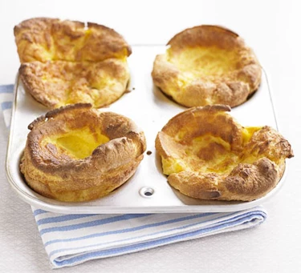

Yorkshire Puddings

Basically the northern England equivalent of the french pancake ( a means to make use of extra flour when you didn’t have enough for bread ). They go well with Sunday Roasts. Puddings may be preserved in freezer for up to a month.
- ⏲️ Prep time: 5 min
- 🍳 Cook time: 20 min
- 🍽️ Servings: 2
Ingredients
- 140g flour
- 4 eggs
- 200ml milk
- sunflower oil
Directions
- Preheat oven to 230°C / gas mark 8.
- Drizzle oil into 24 ‘cupcake tin’ slots. (The pans you make cupcakes in). Heat in oven.
- Pour flour into bowl.
- Whisk eggs, add to bowl.
- Add milk to bowl in small amounts, beating/whisking after each addition. Until there are no lumps in the batter. You may season with salt & pepper.
- Tip batter into a jug so that you may pour into the cupcake pan slots evenly and carefully.
- Bake undisturbed ( opening oven will impede the rising ), until the puddings have puffed up and browned.
Originally published at https://www.bbcgoodfood.com/recipes/best-yorkshire-puddings
Contribution
- siggines - website